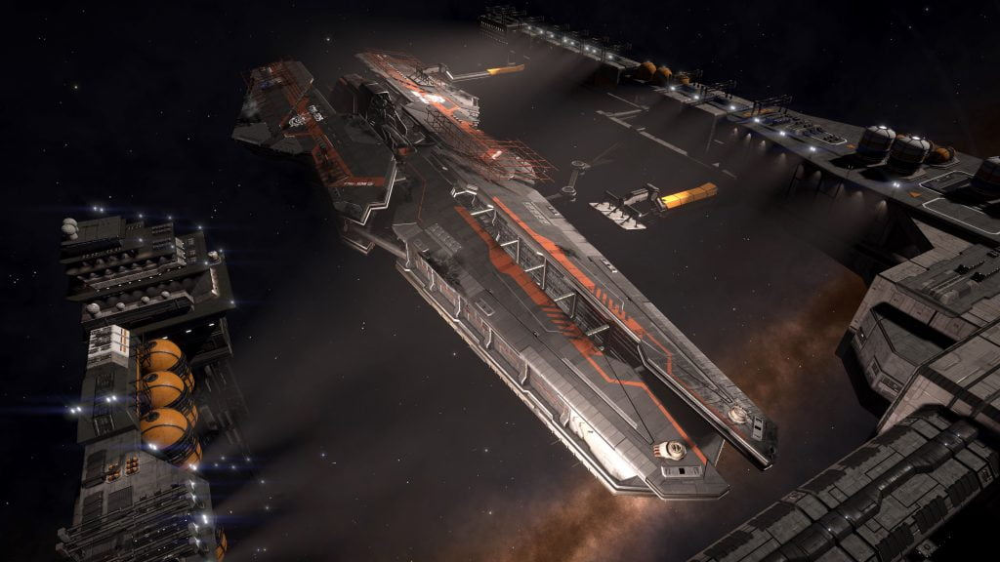

The Federal Navy maintains a number of their vessels on permanent patrol stations, in addition to their active fleet that can be found in Conflict Zones.
These ships may occasionally be accompanied by additional Federal Navy vessels who will open fire on you if you stray too close to them or the Capital Ship. When no additional vessels are around, the Capital Ship is safe to approach.
Note: since the Federation’s withdrawal from the Pleiades on 07 OCT 3303, many of these assigned patrol stations have likely changed.
| Name | Patrol Location | Notes |
|---|---|---|
| FNS Goliath | 19 Phi-2 Ceti AB 2 | |
| FNS Constance | Blatrimpe 9 | |
| FNS Europa | Eta-1 Pictoris 6 | |
| FNS Farragut | HIP 17225 A 1 (-32.7498, 140.1034) | Barnacle Guard |
| FNS Iris | HIP 17225 A 1 | |
| FNS Perseus | Maia A 3 a – Palin Research Centre | Engineer Guard |
| FNS Hawke | Merope | |
| FNS Argus | Merope 2 a (13.4277, -161.5145) | Barnacle Guard |
| FNS Boxer | Merope 2 a (2.6866, 143.0324) | Barnacle Guard |
| FNS Spartan | Merope 2 a (-11.2354, -145.3719) | Barnacle Guard |
| FNS Liberator | Merope 2 c | Quarantined |
| FNS Argonaut | Merope 5 c (-28.7728, -114.0169) | Barnacle Guard |
| FNS Bellerophon | Merope 5 c (-28.245, -109.5219) | Barnacle Guard |
| FNS Glory | Merope 5 c (8.3379, -96.1337) | Barnacle Guard |
| FNX Leviathan | Pleiades Sector IH-V c2-16 A | |
| FNS Ajax | Pleiades Sector IH-V c2-16 C | |
| FNS Constance | Pleiades Sector IH-V c2-16 C 4 (-3.1296, -162.2373) | Barnacle Guard |
| FNS Jupiter | Pleiades Sector IH-V c2-16 C 4 (-1.4189, -165.1571) | Barnacle Guard |
| FNS Europa | Pleiades Sector IH-V c2-16 D 2 (47.5709, -167.2205) | Barnacle Guard |
| FNS Jupiter | Pleiades Sector IH-V c2-16 D 2 (43.3664, 155.3691) | Barnacle Guard |
| FNS Superb | Pleiades Sector IH-V c2-16 D 2 (35.4491, -159.8313) | Barnacle Guard |
| FNS Alacrity | Pleiades Sector JC-U b3-2 | Barycenter of b3-2 1 & 2 |
| FNS Hood | Pleiades Sector JC-U b3-2 1 (-63.0291, -130.8848) | Barnacle Guard |
| FNS Agamemnon | Pleiades Sector RO-Q b5-0 4 (-31.9369, 77.6151) | Barnacle Guard |
| FNS Bellerophon | Pleiades Sector RO-Q b5-0 4 (-23.3382, 71.5151) | Barnacle Guard |
| FNS Hawke | Pleiades Sector RO-Q b5-0 4 (-27.016, 72.0928) | Barnacle Guard |
| FNS Resolution | Pleiades Sector RO-Q b5-0 4 | |
| FNS Angelos | Procyon B 5 | |
| FNS Fearless | Segovan A | |
| FNS Persuer | Segovan A 1 | Barycenter of A 2 & 3 |
| FNS Stalker | Sol – Earth | |
| Starship One | Sol – Mars | President’s Personal Ship |
| FNS Hercules | Thunderbird AB 1 |
The Federal Navy also maintains a number of Capital Ship Dock facilities that can be found adjacent to a small number of Federation-controlled star ports.

These dock facilities contain a single Farragut-class Battlecruiser, showing signs of battle damage, undergoing repairs. The ships are never not broadcasting a transponder signal, and do not carry any identifying hull markings, so cannot be identified.
One or more Satellites can be found in the immediate area, giving Engineer Data when scanned.